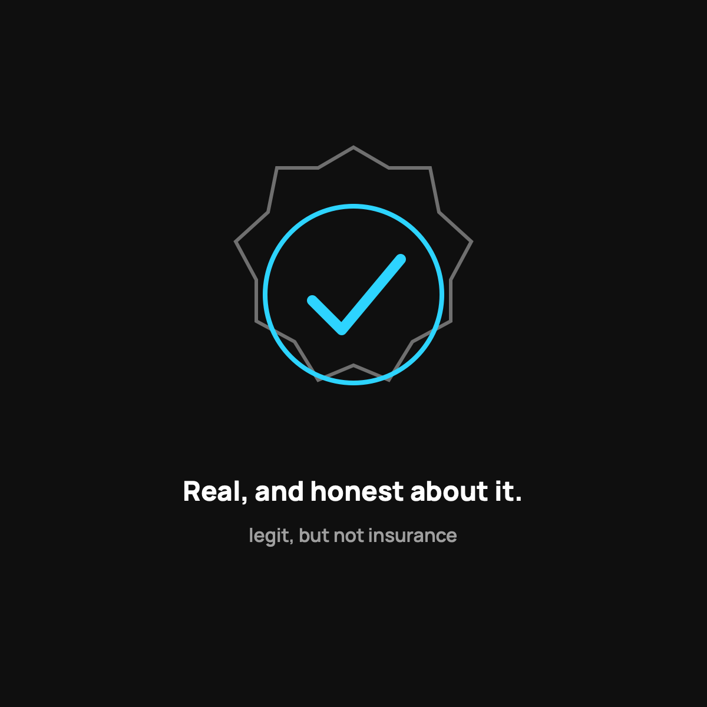

Is Health Sharing Legit?
Yes, and the good ones prove it by being upfront that they're not insurance.
Yes, health sharing is legit. It's a real, legal, decades-old way hundreds of thousands of Americans handle healthcare, and CrowdHealth has funded more than 45,000 bills, including single bills over $600,000. But legit doesn't mean insurance. A trustworthy organization says so loudly, publishes specific guidelines, shows a track record, and prices transparently.

Let's just ask the blunt question everybody's thinking. Is this thing legit, or is it some too-good-to-be-true scheme that leaves you holding the bag? It's the right question to ask about anything involving your family's health and money. So here's the honest answer, with the reasons, so you can decide for yourself instead of taking my word for it.
The short answer
Yes, health sharing is legit, in the sense that it's a real, established, above-board way that hundreds of thousands of Americans handle their healthcare. Health sharing organizations have existed for decades. The one I use, CrowdHealth, has funded more than 45,000 bills, including single bills over $600,000. This isn't a fly-by-night operation or a scam. It's a real model with a real track record.
But "legit" doesn't mean "the same as insurance," and that distinction is the whole ballgame.
What "legit but not insurance" means
Here's the part you must understand. Health sharing is legally not insurance. It's a community of people agreeing to share each other's medical costs, not a company selling you a legal contract that guarantees payment.
That's not a loophole or a dodge. It's stated plainly, right up front, by every honest health sharing organization. The model is legitimate precisely because it's honest about what it is. The scam version would be pretending to be insurance while not delivering it. The legit version tells you clearly, "this is sharing, not insurance, here's exactly how it works and what the limits are."
How to spot a legit one from a shady one
Not every organization is equal, so here's how I'd vet one:
- Do they clearly say they're not insurance? A good one says it loudly. A shady one blurs the line.
- Are the guidelines public and specific? You should be able to read exactly what's shared and what isn't before you join.
- Is there a real track record? Look for the number of bills funded and independent member reviews.
- Is the pricing transparent? No mystery math, no bait and switch.
CrowdHealth checks these boxes, which is why I use it. But apply this checklist to anyone, including them.
The honest limits, one more time
Being legit doesn't erase the limits. It is not insurance, so there's no legal guarantee. There are exclusions and pre-existing rules. Those are real, and I've written about them plainly, including who should skip health sharing entirely. A legit model with honest limits beats a slick pitch that hides them, every time.
The takeaway
Health sharing is a legitimate, long-established way to handle healthcare costs, and the good organizations prove it by being upfront that they're not insurance and by showing real track records. "Legit" and "not insurance" are both true at once. Vet any organization with the checklist, read the guidelines, and you can trust the model with your eyes open.
Questions I get about this
Is health sharing a scam?
No. The scam version would be pretending to be insurance while not delivering it. Legit organizations tell you clearly "this is sharing, not insurance," publish exactly what's shared and what isn't, and show a public track record. Vet any one with that checklist, including CrowdHealth.
Is health sharing legal?
Yes. Health sharing organizations have existed for decades and operate above board. A few states (Vermont, California, Massachusetts, New Jersey, Rhode Island, and DC) have extra insurance-mandate steps for members, so check your state.
How do I know CrowdHealth will pay?
You don't get a legal guarantee, because it isn't insurance. You get a public track record: tens of thousands of bills funded, usually in about a week, and independent member reviews you can read. I dig into that in Can You Trust Health Sharing With a Big Bill?.
Want to check the track record and guidelines yourself? Use my code NORMAL: see CrowdHealth (opens in a new tab). New members get their first 3 months at $99 a month with code NORMAL.
My family of four uses CrowdHealth and I really believe in the model. If you join through my discount link (opens in a new tab) (code NORMAL), you get your first 3 months at $99 a month, and Normaltown USA earns a referral bonus if you stick around. It costs you nothing extra, and I only refer you to things I would tell a friend about. Health sharing is not insurance, and nothing here is medical, tax, or financial advice.

Written by David Dewese
Normal guy with a full-time job, wife, and kids. Spent twenty years pursuing music and creative ventures before starting a family. Sharing tips and tricks on how to thrive while living on an artist's income. Not a financial advisor. More about me.
New here?
Normaltown USA is plain-English money and healthcare help for normal people, written by a regular guy with a family of four. No jargon, no hype. Start here, or read the FAQ.